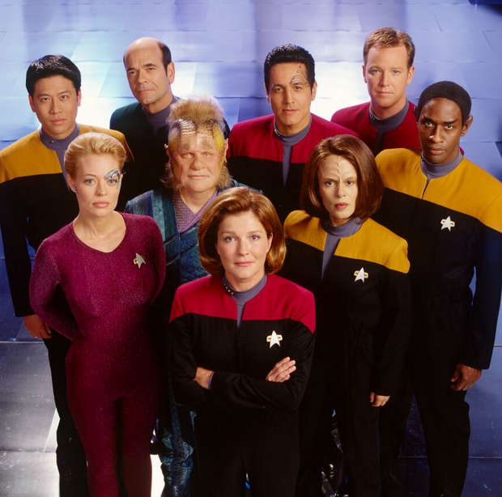

@c6reviews.
@c6reviews.
| Star Trek: Voyager | |
|---|---|
|  | |
| Abbreviation: | VOY |
| Episodes: | 168 |
| Air dates: | Jan 16, 1995 - May 23, 2001 |
| In-universe years: | 2371-2378 |
| Universe TimelineGo to full timeline ➡ | |||
|---|---|---|---|
| 2363 | |||
| 2364 | Star Trek The Next Generation (TNG) |
||
| 2365 | |||
| 2366 | |||
| 2367 | Battle at Wolf 359 | ||
| 2368 | |||
| 2369 | Star Trek Deep Space Nine (DS9) |
||
| 2370 | |||
| 2371 | Star Trek Voyager (VOY) |
Generations | |
| 2372 | |||
| 2373 | First Contact | ||
| 2374 | |||
| 2375 | Insurrection | ||
| 2376 | |||
| 2377 | |||
| 2378 | |||
| 2379 | Nemesis | ||
| 2380 | Star Trek Lower Decks (LOW) |
||
| 2381 | |||
| 2382 | |||
| 2383 | Star Trek Prodigy (PRO) |
||
| 2384 | |||
| 2385 | |||
| 2386 | |||
All Episode Guides
Season 1 • Season 2 • Season 3 • Season 4 • Season 5 • Season 6 • Season 7
Full Episode List
Star Trek: Voyager takes place in the 24th century, just after the end of The Next Generation. Voyager is the fifth Star Trek series, airing from 1995 to 2001. The show's story centers on the USS Voyager, which is hurdled into the Delta Quadrant, very far from Earth. In fact, at their top speed, it will take them over 70 years to get back. Nevertheless, they set course for Earth and try to find ways to speed their journey home while navigating the dangers in this never-before explored quadrant of space.
Captain Kathryn Janeway made Star Trek: Voyager the first in the franchise to feature a woman in command of a starship, a welcome change to Roddenberry's, um, shall we say, "dated" feelings toward women. First Officer Chakotay, a Native American, is also a notable addition to the crew, but sadly it's for all the wrong reasons. It turns out that the Native American consultant that was hired to work on the show was a fraud, making Chakotay's character an inaccurate caricature of a Native American.
Star Trek: Voyager also builds on the four Borg episodes from The Next Generation, adding a whopping twelve Borg episodes of its own (six primary and six secondary). Unfortunately, what this series does is take the extremely forbidding and unstoppable nature of the TNG Borg and nerfs them down considerably. Episodes in this series make the Borg more human and relatable, even pitiable in some cases. There are also several cases where Voyager is a formidable foe against the Borg, a far cry from when the Enterprise was barely able to scratch a cube's paint. The Battle of Wolf 359 saw the destruction of 39 Starfleet ships by just one Borg cube, but somehow the USS Voyager, built only four years after that battle, can easily hold their own.
I found it difficult to decide on watch recommendations for some of these episodes. Not only is this mostly an episodic series where each episode is self-contained, but it also involves species and stories well outside the normal Trek canon. That means some episodes aren't just one-offs to the series, they're one-offs to the entire franchise.
Spoiler Policy
- Generally speaking, you can safely read any of the episode guides without fear of spoiling any plot reveals or twists in a single episode, though it's possible it might spoil something from a previous episode.
- HOWEVER, this show is from the 1990s, so it's not exactly new. Some things just can't be a surprise any more. Episode descriptions or pictures may hint at things you might not have otherwise known if this is your first time watching.
- Blatant spoilers will be obscured, with a "Spoiler" tag that you can click on to reveal the contents. Don't read the spoiler unless you've seen the episode. Try it here: Spoiler » This is a spoiler!
Understanding Ratings and Recommendations
Everyone has different tastes and opinions, and my opinions certainly aren't always popular. To help combat that, a "final score" on any episode is an average of my rating and the ratings from 3 other independent sources, including IMDb. Though, my rating is weighted a little higher in that calculation, because this is my website, after all. In addition to the ratings, I also provide a "Watch Recommendation" which doesn't necessarily have anything to do with the quality of the episode. Rather, the watch recommendation is based on how important the episode is to the overall story of the entire series, whether that episode is good or bad. See below for more details.
Episode Scores
| Episode Rating | Rating Value Range | Description |
|---|---|---|
| My rating |
★☆☆☆☆ ★★☆☆☆ ★★★☆☆ ★★★★☆ ★★★★★ |
|
| SF Debris rating | 0-10 |
|
| Ex Astris Scientia rating | 0-10 |
|
| Normalized IMDb rating | 0-10 |
|
| FINAL SCORE | 0-10 |
|
Additional Awards
| Award | Description | |
|---|---|---|
| ♥ | Personal Favorite | This is a purely subjective distinction that indicates an episode that I just particularly like, and there is no accounting for taste. |
| 🥇 | 1st place | These are awarded to what I consider to be the best episodes in the series, but that are also representative of the series. |
| 🥈 | 2nd place | |
| 🥉 | 3rd place | |
| Admiral Pips | Pips are awarded to episodes that are the most stand-out, representative examples of the series as a whole. | |
| Vice Admiral Pips | ||
| 🏅 | Special Award | A Special Award is given to episodes that have something truly unique to be celebrated. |
| 🎖 | General Award | A General Award is given to episodes that deserve something a little extra. |
| ⚑ | Penalty Flag | A penalty flag is given to an episode that is far enough out of the norm that it can hardly be considered part of the series. |
| ⚑ | Red Flag | A red flag indicates content that is inappropriate, outdated, insensitive, or possibly even offensive. |
Watch Recommendations
Watch recommendations are mostly based on how important the episode is to the overall series, not necessarily whether the episode is particularly good.
| Category | Description | # of episodes in this series | |
|---|---|---|---|
|
This track is designed for someone who would like the bare-minimum experience to get the "gist" of the series from beginning to end. This track usually includes the series premiere, the series finale, and a smattering of episodes in between. Episodes in this track are frequently also in the "Must Watch" category, but not always. This track doesn't always include high-scoring or iconic episodes; it focuses instead on giving you the quickest glimpse into the important elements to the overall story arc of the entire series. |
11 | ||
| 🕶 | MUST WATCH |
This category fills out a lot more of the gaps in the story-telling than the "Bare Minimum" track does, but still only includes the most important and most iconic episodes of a series. "Must Watch" episodes aren't always just the best, highly-rated episodes. This track includes episodes that are the most important for understanding the overall story arc of the series, and that may include some low-rated, "not great" episodes. |
32 21 + 11 from the "Bare Minimum" track |
| ✔+ | HIGHLY RECOMMENDED |
"Highly Recommended" episodes are usually ones that are highly-rated but aren't necessarily important to the overall story arc of the entire series. You could probably skip these without missing any important plot points, but you might be missing out on a really good episode. |
4 |
| ✔ | RECOMMENDED |
If you're looking for even more episodes to watch, this recommended list is the place to go. These are episodes that are usually average or above-average, and they might provide more in-depth details about characters and events, but they aren't necessarily crucial to understanding the entire series. |
46 |
| ♦ | OPTIONAL | "Optional" episodes are usually ones that wouldn't otherwise be recommended, but might have a special guest character or particular plot point that you might be interested in watching. | 3 |
| - | NO RECOMMENDATION | This is the default. It doesn't mean the episode is bad, it just means that you can skip it without missing anything too important. | 80 |
| ✖ | NOTABLY BAD | Particularly bad episodes are called out in this category. Sometimes, maybe you just want to see an example of the worst in a series! | 3 |